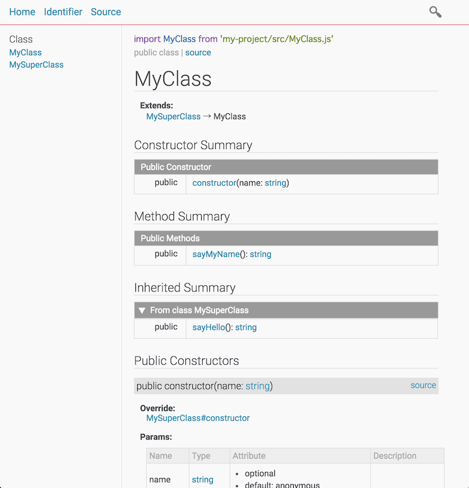
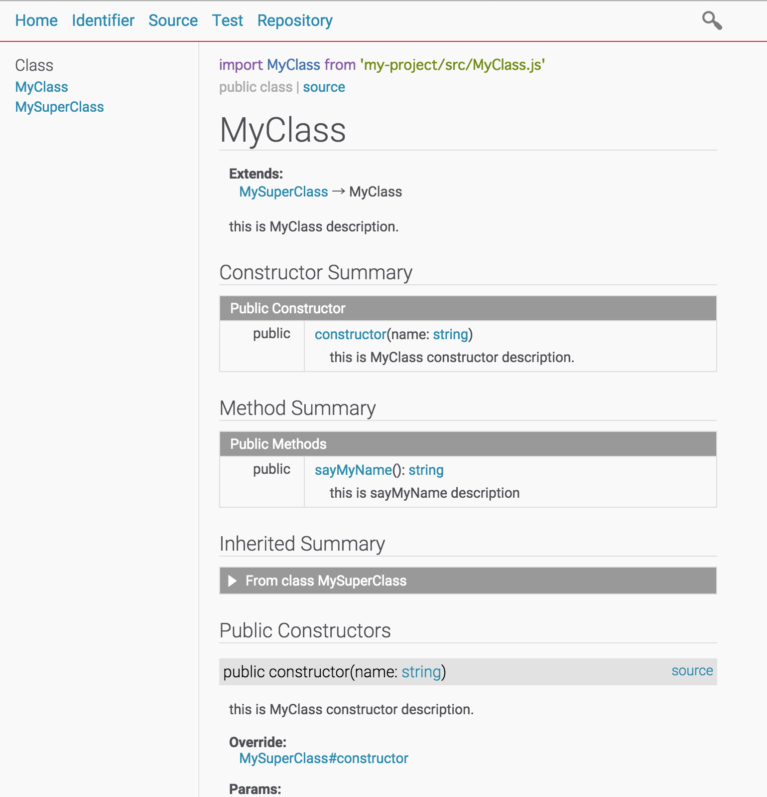
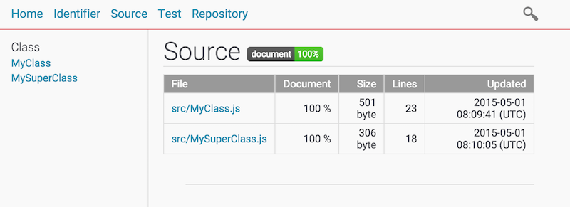
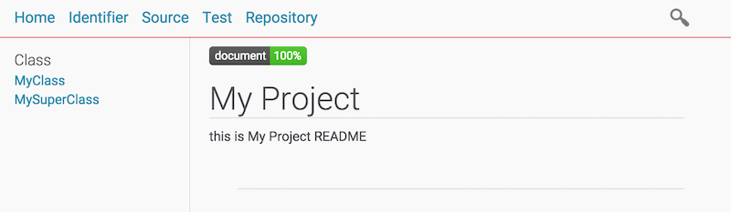
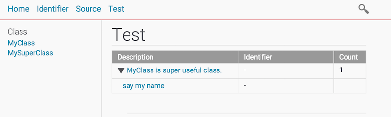
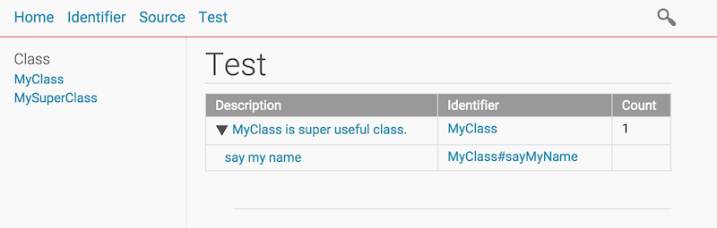
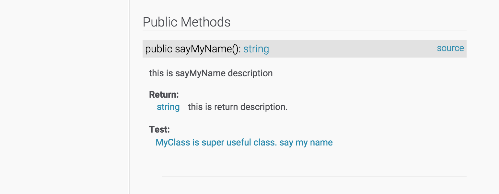

Tutorial
- Install ESDoc
- Create Config File
- Write Document Tag
- Document Coverage
- Generate Document From Test Code
- Appendix
This tutorial explains how to generate a document with the following JavaScript source code.
my-project/
├── README.md
├── package.json
└── src
├── MyClass.js
└── MySuperClass.js
my-project/src/MyClass.js
import MySuperClass from './MySuperClass.js';
export default class MyClass extends MySuperClass {
constructor(name = 'anonymous') {
super();
this._name = name;
}
sayMyName() {
return `My name is ${this._name}`;
}
}
my-project/src/MySuperClass.js
export default class MySuperClass {
constructor() {
}
sayHello(){
return 'Hello!';
}
}
my-project/README.md
# My Project
this is My Project README
Install ESDoc
Install ESDoc with npm.
npm install esdoc -g
esdoc -h
Create Config File
Create ESDoc config file.
my-project/esdoc.json
{
"source": "./src",
"destination": "./out/esdoc"
}
Execute ESDoc and see output document.
esdoc -c ./esdoc.json
open ./out/esdoc/index.html

This is minimum configuration. You can see full configuration in the Config page.
Write Documentation Tags
The documentation is not good, because it is generated by the source code without tag(e.g. @param).
So, write documentation tags.
my-project/src/MyClass.js
import MySuperClass from './MySuperClass.js';
/**
* this is MyClass description.
*/
export default class MyClass extends MySuperClass {
/**
* this is MyClass constructor description.
* @param {string} [name="anonymous"] - this is name description.
*/
constructor(name = 'anonymous') {
super();
this._name = name;
}
/**
* this is sayMyName description
* @returns {string} this is return description.
*/
sayMyName() {
return `My name is ${this._name}`;
}
}
my-project/src/SuperMyClass.js
/**
* this is MySuperClass description.
*/
export default class MySuperClass {
/**
* this is MySuperClass constructor description.
*/
constructor() {
}
/**
* this is sayHello description.
* @returns {string} this is return description.
*/
sayHello(){
return 'Hello!';
}
}
execute ESDoc and see output document.
esdoc -c ./esdoc.json
open ./out/esdoc/index.html

Congratulation! The document is good!
ESDoc has some tags. Tags page describes full tags. You can see all tags in the Tags page.
Document Coverage
ESDoc measures document coverage.
See my-project/out/esdoc/source.html

If you want to display document coverage badge in index page, write <span class="esdoc-coverage"></span> in README.md file.
my-project/README.md
<span class="esdoc-coverage"></span>
# My Project
this is My Project README

Generate Document From Test Code
ESDoc can generate document from test code. (Now, support only Mocha)
Write test code.
my-project/test/MyClassTest.js
import assert from 'assert';
import MyClass from '../src/MyClass.js';
describe('MyClass is super useful class.', ()=>{
it('say my name', ()=>{
let foo = new MyClass('Alice');
assert.equal(foo.sayMyName(), 'My name is Alice');
})
});
And add test configuration.
my-project/esdoc.json
{
"source": "./src",
"destination": "./out/esdoc",
"test": {
"type": "mocha",
"source": "./test"
}
}
Execute ESDoc and see output document.
esdoc -c ./esdoc.json
open ./out/esdoc/index.html

Write tags for test code
my-project/test/MyClassTest.js
import assert from 'assert';
import MyClass from '../src/MyClass.js';
/** @test {MyClass} */
describe('MyClass is super useful class.', ()=>{
/** @test {MyClass#sayMyName} */
it('say my name', ()=>{
let foo = new MyClass('Alice');
assert.equal(foo.sayMyName(), 'My name is Alice');
})
});


Appendix
Target Code Style
ESDoc targets at ES6 class and import/export style.
- Use class, extends, static, constructor, method, get and set syntax.
- If you want to target at ES5, might better to use JSDoc.
- Use import and export syntax for module.
Target Identifier
ESDoc processes only top level identifier.
// this is processed.
class MyClass {
}
(function(){
// this is not processed.
class MyClass{
}
})();
You can control target identifiers with access, unexportIdentifier and undocumentIdentifier in config file.
See Config.
Tutorial is finish! Please enjoy writing documentation with ESDoc!